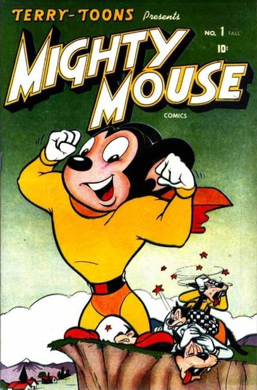

Mighty Mouse is an American animated anthropomorphic, superhero mouse character created by the Terrytoons studio for 20th Century Fox. The character first appeared in 1942 (originally named Super Mouse) and subsequently in 80 theatrical films between 1942 and 1961. These films appeared on American television from 1955 through 1967, Saturday mornings on the CBS television network. The character was twice revived, by Filmation Studios in 1979 and in 1987 by animation director Ralph Bakshi, who had worked at the Terrytoons studio during his early career.
Mighty Mouse has also appeared in comics and other media.

Created as a parody of Superman, he first appeared in 1942 in a theatrical animated short titled The Mouse of Tomorrow. Originally named Super Mouse, after seven films in 1942–43, he was renamed Mighty Mouse for The Wreck of the Hesperus (1944), after Paul Terry learned that another character named "Super Mouse" was to be published by Marvel Comics.
Beginning in 1945, some Mighty Mouse episodes had operatic dialogue, and he was drawn slightly differently. Both changes attempted to take advantage of the growing popularity of singer and actor Mario Lanza, beginning with Mighty Mouse and The Pirates. Others included Gypsy Life and The Crackpot King. Mighty Mouse's adventures later focused on Pearl Pureheart and Oilcan Harry; the dialogue in these episodes were always sung by the characters.